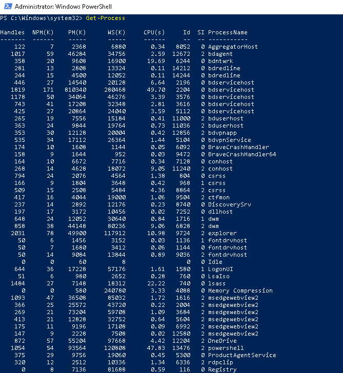
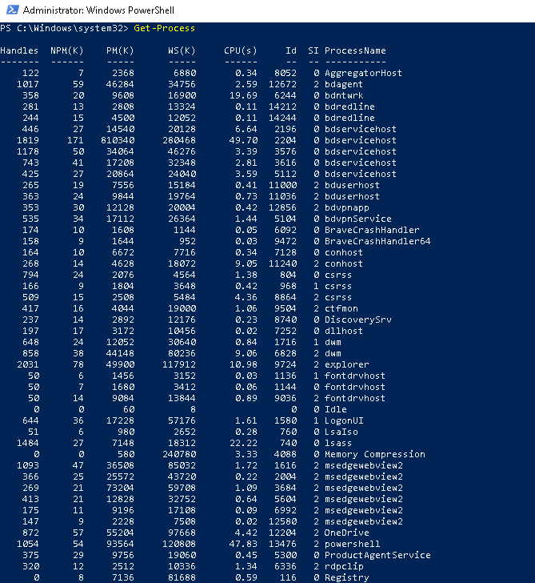

PowerShell is a powerful command-line shell and scripting language built on .NET Framework. Designed for system administrators and power users, it automates repetitive tasks, manages system configurations, and interacts with APIs, registry, and file systems. It is object-based (unlike traditional text-based shells), meaning it passes objects between commands (not just raw text), which gives it unique flexibility.
What is the .NET Framework
The .NET Framework is the core powerhouse behind PowerShell's intelligence. It's not just a programming platform - it's the engine that gives PowerShell its ability to work with complex data, interact with the Windows operating system, and control almost every part of your system with precision. When you run a cmdlet like Get-Process or manipulate objects with Select-Object, you're tapping directly into the .NET 's rich library of pre-built classes and methods.
In simple terms, the .NET Framework provides PowerShell with:
- Access to powerful libraries that can read files, query networks, and manage Windows services
- A runtime environment (CLR) that handles memory, execution, and error handling.
- The ability to treat data as objects, not plain text - allowing advanced filtering, formatting, and manipulation.
PowerShell isn't just a shell - it's a scripting language deeply rooted in the .NET ecosystem, which is why it can do far more than traditional shells. Every command you run inherits the depth and structure of .NET, turning simle commands into powerful, scalable automation scripts.
Getting Started with PowerShell
- PowerShell versions (Windows PowerShell vs PowerShell Core)
- Cmdlets & Basic Syntax and Structure
- Working with Files and Directories
- PowerShell Scripting Basics
- Real World Cases
Cmdlets & Basic Syntax and structure
Cmdlet = Command + Let (lightweight commands)
Cmdlets are the precision tools of PowerShell - small but powerful commands that do one job and do it well. Cmdlets can be thought of as individual building blocks in a high performance automation toolkit. Written in the .NET Framework and designed specifically for administrative tasks, each cmdlet follows a clear Verb-Noun format, making it easy to guess and intuitive to learn. Unlike traditional shell commands that output plain text, cmdlets output structured objects, allowing you to filter, sort, and manipulate data with accuracy. Whether you're pulling system info, managing users, or stopping rogue services, cmdlets are your go-to tools for scripting control and operational mastery.
Naming Format
Cmdlets use a Verb-Noun naming pattern for clarity and consistency:
| Verb | Noun | Meaning |
|---|---|---|
| Get- | Help | Displays help info about cmdlets |
| Get- | Command | Lists available cmdlets |
| Get- | Process | Show running processes |
| Get- | Service | Show running services |
| Start- | Service | Start a specific service |
| Restart- | Service | Restart a specific service |
| Stop- | Service | Stop a specific service |
 



Working with Files and Directories
Get-ChildItem
Set-Location
New-Item
Remove-Item
Copy-Item
Move-Item


PowerShell Scripting Basics
Variables and Data Types
$Name = "Dave"
$Age = 29
$Services = Get-Service
Variables start with $
Data types: string, int, array, boolean, object

Loops and Conditional Statements
# If-Else
if ($Age -gt 18) {
Write-Output "Adult"
} else {
Write-Output "Minor"
}
# ForEach Loop
$services = Get-Service
foreach ($service in $services) {
Write-Output $service.DisplayName
}

Functions
function Greet-User {
param ($Name)
Write-Output "Welcome, $Name!"
}
Greet-User -Name "Dave"

Create reusable code blocks
Scripts end with the .ps1 extension.ps1
Permissions and Execution Policy
Get-ExecutionPolicy
Set-ExecutionPolicy RemoteSigned
Policies: Restricted, AllSigned, RemoteSigned, Unrestricted
Might need admin privileges
# This is a comment
Write-Output "Hello, PowerShell"
Useful Tools and Debugging
Write-HostvsWrite-OutputStart-Transcriptto log sessionsTry / Catch / Finallyfor error handling
try {
Get-Item "C:\fakefile.txt"
} catch {
Write-Output "File not found!"
}

Real-World Use Cases
- Batch user creation in AD
- Automating updates
- Backing up and archiving logs
- Scheduled tasks and reporting
Conclusion
PowerShell gives IT professionals control and automation in ways that save time, reduce errors, and increase system reliability. Mastering its fundamentals is the first step to becoming a true IT automation pro.